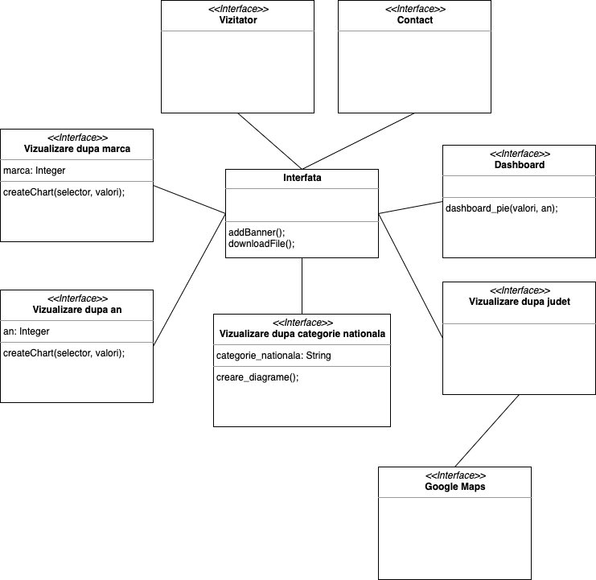

Proiect TW
APAX este un website care permite vizualizarea a mai multor statistici pe baza datelor publice privind parcul auto din România pe ultimii 5 ani. Statisticile oferite de APAX sunt categorizate pe an, categorie națională, județ și marcă. Acestea pot fi vizualizate printr-un grafic separat, pentru fiecare categorie. De asemenea, pentru a intra în contact cu APAX, este făcută o pagină separată denumită "Contact". Datele pot fi descărcate în trei moduri diferite: CSV, SVG și WebP.
În cazul în care o persoană caută surse de vizualizare a datelor despre mașini, formatul public din fișierele de CSV este dificil de înțeles și este greu de comparat diferite valori. Astfel, APAX vine în ajutorul lor prin a folosi toate datele publice și a le introduce în diferite grafice care ușurează vizualizarea și compararea valorilor.
Scopurile principale ale aplicației web sunt:
Tehnologii folosite:
Disclosure information is a list of disclosure actions described in a simple triples structure.
API-uri